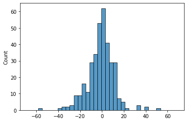

Merit Order Effect Quantification¶

This notebook outlines how the moepy library can be used to quantify the merit order effect of intermittent RES on electricity prices. Please note that the fitted model and estimated results are less accurate than those found in the set of development notebooks, as this notebook is for tutorial purposes the ones found here are using less data and smooth over larger time-periods to reduce computation time.
Imports¶
import pandas as pd
import numpy as np
import pickle
import seaborn as sns
import matplotlib.pyplot as plt
from moepy import moe
Data Loading¶
We'll first load the data in
df_EI = pd.read_csv('../data/ug/electric_insights.csv')
df_EI['local_datetime'] = pd.to_datetime(df_EI['local_datetime'], utc=True)
df_EI = df_EI.set_index('local_datetime')
df_EI.head()
| local_datetime | day_ahead_price | SP | imbalance_price | valueSum | temperature | TCO2_per_h | gCO2_per_kWh | nuclear | biomass | coal | ... | demand | pumped_storage | wind_onshore | wind_offshore | belgian | dutch | french | ireland | northern_ireland | irish |
|---|---|---|---|---|---|---|---|---|---|---|---|---|---|---|---|---|---|---|---|---|---|
| 2010-01-01 00:00:00+00:00 | 32.91 | 1 | 55.77 | 55.77 | 1.1 | 16268 | 429 | 7.897 | 0 | 9.902 | ... | 37.948 | -0.435 | nan | nan | 0 | 0 | 1.963 | 0 | 0 | -0.234 |
| 2010-01-01 00:30:00+00:00 | 33.25 | 2 | 59.89 | 59.89 | 1.1 | 16432 | 430 | 7.897 | 0 | 10.074 | ... | 38.227 | -0.348 | nan | nan | 0 | 0 | 1.974 | 0 | 0 | -0.236 |
| 2010-01-01 01:00:00+00:00 | 32.07 | 3 | 53.15 | 53.15 | 1.1 | 16318 | 431 | 7.893 | 0 | 10.049 | ... | 37.898 | -0.424 | nan | nan | 0 | 0 | 1.983 | 0 | 0 | -0.236 |
| 2010-01-01 01:30:00+00:00 | 31.99 | 4 | 38.48 | 38.48 | 1.1 | 15768 | 427 | 7.896 | 0 | 9.673 | ... | 36.918 | -0.575 | nan | nan | 0 | 0 | 1.983 | 0 | 0 | -0.236 |
| 2010-01-01 02:00:00+00:00 | 31.47 | 5 | 37.7 | 37.7 | 1.1 | 15250 | 424 | 7.9 | 0 | 9.37 | ... | 35.961 | -0.643 | nan | nan | 0 | 0 | 1.983 | 0 | 0 | -0.236 |
Generating Predictions¶
We'll use a helper function to both load in our model and make a prediction in a single step
model_fp = '../data/ug/GB_detailed_example_model_p50.pkl'
dt_pred = pd.date_range('2020-01-01', '2021-01-01').tz_localize('Europe/London')
df_pred = moe.construct_df_pred(model_fp, dt_pred=dt_pred)
df_pred.head()
| Unnamed: 0 | 2020-01-01 00:00:00+00:00 | 2020-01-02 00:00:00+00:00 | 2020-01-03 00:00:00+00:00 | 2020-01-04 00:00:00+00:00 | 2020-01-05 00:00:00+00:00 | 2020-01-06 00:00:00+00:00 | 2020-01-07 00:00:00+00:00 | 2020-01-08 00:00:00+00:00 | 2020-01-09 00:00:00+00:00 | 2020-01-10 00:00:00+00:00 | ... | 2020-12-23 00:00:00+00:00 | 2020-12-24 00:00:00+00:00 | 2020-12-25 00:00:00+00:00 | 2020-12-26 00:00:00+00:00 | 2020-12-27 00:00:00+00:00 | 2020-12-28 00:00:00+00:00 | 2020-12-29 00:00:00+00:00 | 2020-12-30 00:00:00+00:00 | 2020-12-31 00:00:00+00:00 | 2021-01-01 00:00:00+00:00 |
|---|---|---|---|---|---|---|---|---|---|---|---|---|---|---|---|---|---|---|---|---|---|
| -2 | -18.5313 | -18.5192 | -18.5074 | -18.4956 | -18.484 | -18.4725 | -18.4612 | -18.45 | -18.4389 | -18.428 | ... | -14.4174 | -14.4159 | -14.4146 | -14.4136 | -14.4128 | -14.4121 | -14.4117 | -14.4114 | -14.4112 | -14.4111 |
| -1.9 | -18.2762 | -18.2642 | -18.2524 | -18.2407 | -18.2292 | -18.2178 | -18.2065 | -18.1954 | -18.1843 | -18.1735 | ... | -14.1843 | -14.1828 | -14.1816 | -14.1805 | -14.1797 | -14.1791 | -14.1786 | -14.1783 | -14.1781 | -14.178 |
| -1.8 | -18.0218 | -18.0099 | -17.9982 | -17.9865 | -17.9751 | -17.9637 | -17.9525 | -17.9414 | -17.9304 | -17.9196 | ... | -13.9519 | -13.9504 | -13.9491 | -13.9481 | -13.9472 | -13.9466 | -13.9462 | -13.9458 | -13.9457 | -13.9456 |
| -1.7 | -17.7681 | -17.7563 | -17.7446 | -17.733 | -17.7216 | -17.7103 | -17.6991 | -17.6881 | -17.6772 | -17.6665 | ... | -13.72 | -13.7185 | -13.7172 | -13.7162 | -13.7154 | -13.7148 | -13.7143 | -13.714 | -13.7138 | -13.7137 |
| -1.6 | -17.5151 | -17.5033 | -17.4917 | -17.4802 | -17.4688 | -17.4576 | -17.4465 | -17.4355 | -17.4247 | -17.414 | ... | -13.4887 | -13.4872 | -13.4859 | -13.4849 | -13.4841 | -13.4835 | -13.483 | -13.4827 | -13.4825 | -13.4824 |
We can now use moe.construct_pred_ts to generate a prediction time-series from our surface estimation and the observed dispatchable generation
s_dispatchable = (df_EI_model['demand'] - df_EI_model[['solar', 'wind']].sum(axis=1)).dropna().loc[:df_pred.columns[-2]+pd.Timedelta(hours=23, minutes=30)]
s_pred_ts = moe.construct_pred_ts(s_dispatchable['2020'], df_pred)
s_pred_ts.head()
local_datetime
2020-01-01 00:00:00+00:00 32.080126
2020-01-01 00:30:00+00:00 32.627349
2020-01-01 01:00:00+00:00 32.296901
2020-01-01 01:30:00+00:00 31.561614
2020-01-01 02:00:00+00:00 31.078722
dtype: float64
We can visualise the error distribution to see how our model is performing
To reduce this error the resolution of the date-smoothing and LOWESS fit can be increased, this is what was done for the research paper and is shown in the set of development notebooks. Looking at 2020 also increases the error somewhat.
s_price = df_EI['day_ahead_price']
s_err = s_pred_ts - s_price.loc[s_pred_ts.index]
print(s_err.abs().mean())
sns.histplot(s_err)
_ = plt.xlim(-75, 75)
8.897118237665632

Calculating the MOE¶
To calculate the MOE we have to generate a counterfactual price, in this case the estimate is of the cost of electricity if RES had not been on the system. Subtracting the simulated price from the counterfactual price results in a time-series of our simulated MOE.
s_demand = df_EI_model.loc[s_dispatchable.index, 'demand']
s_demand_pred_ts = moe.construct_pred_ts(s_demand['2020'], df_pred)
s_MOE = s_demand_pred_ts - s_pred_ts
s_MOE = s_MOE.dropna()
s_MOE.mean() # N.b for the reasons previously mentioned this particular value is inaccurate
11.215738750384316